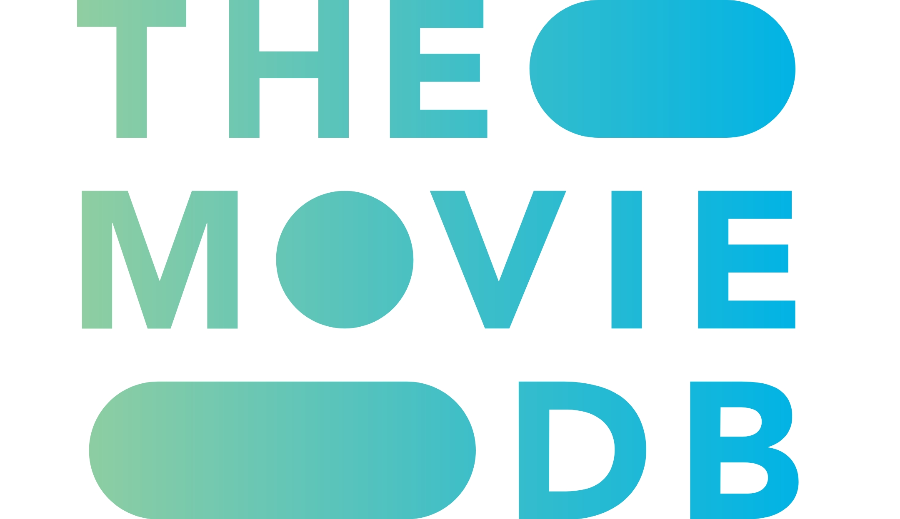
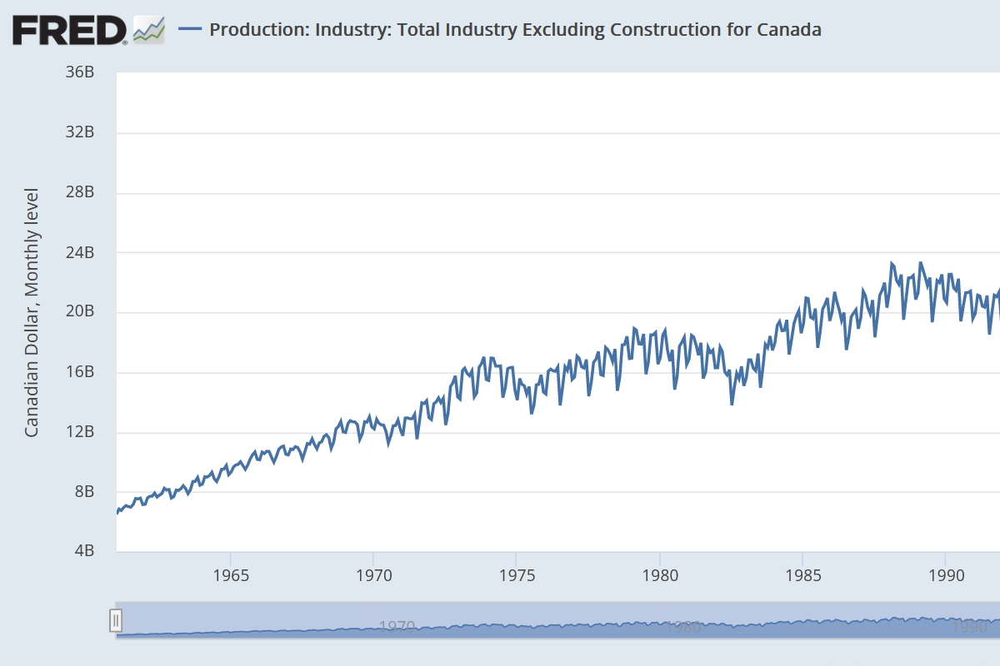
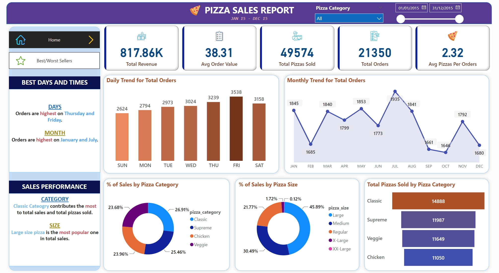
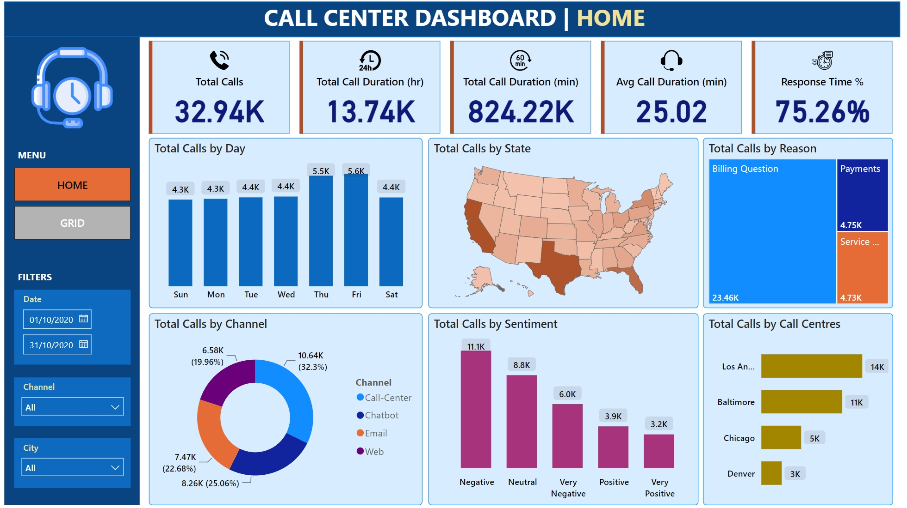
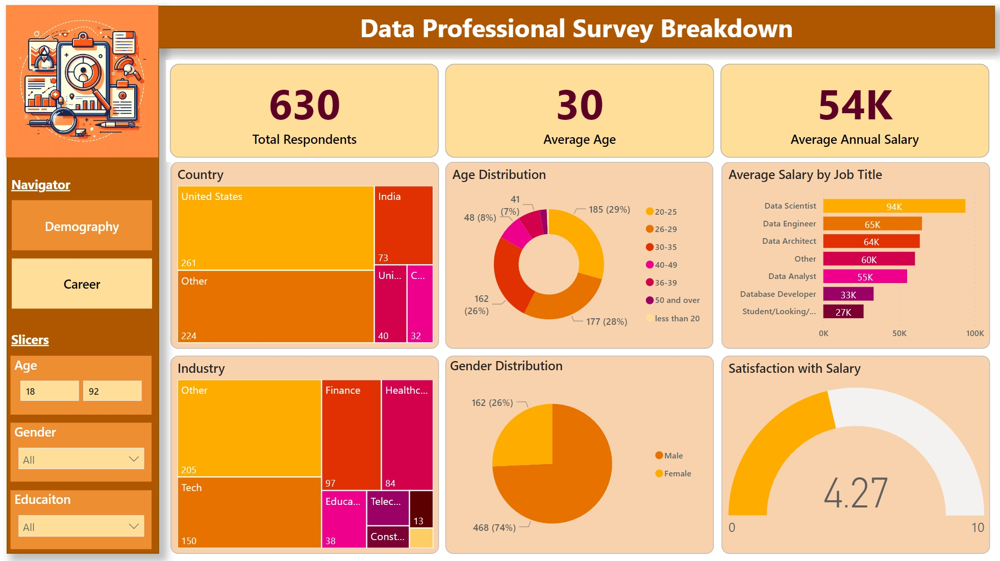
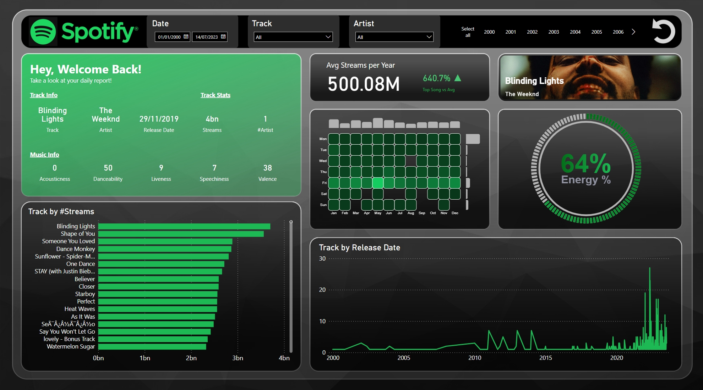

TMDB Movie Analysis
Python Project
Welcome to the data analysis project of the TMDB 5000 Movie Dataset! This dataset contains information about more than 5000 movies from The Movie Database (TMDb),
including their genres, keywords, ratings, revenues, budgets, cast and crew. In this project, I will explore the dataset and try to answer some interesting questions,
such as: What are the most popular genres? How does the budget affect the revenue? Which actors and directors are the most successful? And more! I will use Python
and various libraries to perform data cleaning, visualization and analysis. Let's get started and have some fun with movies!

COVID-19 Pandemic Analysis
SQL Server Project

The Covid pandemic has been affecting the world since late 2019, causing unprecedented impacts on the health and economy of different countries and regions.
This project aims to analyze the data and provide insights related to COVID-19 testing, vaccination, and mortality across various locations and periods.
Based on Microsoft SQL Server, I will explore, clean, and analyze the data using basic to advanced SQL queries and answer some critical questions.
Canada Production
Time Series R Project

Using data from the Organization for Economic Co-operation and Development (OECD), this Time Series R project aims to analyze total industry production in Canada using standard statistical forecasting techniques,
such as ETS and ARIMA models, and compare different models to choose the best-performing models to forecast how the production in the Canadian industry will continue in the near future and forecast the monthly production.
Pizza Sales
PowerBI Dashboard

This dashboard provides an overview of the sales performance of a pizza business, using various charts and key performance indicators (KPIs).
The KPIs consist of total revenue, average order value, total pizzas sold, total orders, and average pizzas per order.
The charts illustrate the fluctuations and distributions of the sales data across different dimensions, such as time, pizza category, pizza size, and best sellers.
It enables the managers to monitor and analyze their sales performance and identify potential areas of improvement or opportunity.
Call Center Operation
PowerBI Dashboard

This dashboard can help the call center managers and agents to monitor and improve their service quality and customer satisfaction.
It shows various metrics and charts related to the performance and quality of the calls, such as the total number and duration of the calls,
the average call duration, the response time percentage, the trend of the calls by day, the distribution of the calls by state,
the proportion of the calls by their main reason or issue, the comparison of the calls by their channel,
the breakdown of the calls by their sentiment, and the ranking of the calls by their call center location.
Data Professional Survey
PowerBI Dashboard

This dashboard visualized and analyzed the data collected from a survey of data professionals,
which consisted of 13 questions pertaining to their careers, salaries, happiness and demographics.
It offers useful insights for data professionals who are interested in the data field.
Spotify Daily Report
PowerBI Dashboard

This dashboard has some very cool visualizations created from advanced visual tools like HTML and Deneb.
Both tools required coding, so I have to refer to some documentations.
The theme is customized to fit Spotify pallete and the background is created in PowerPoints.
I made this dashboard just for fun.